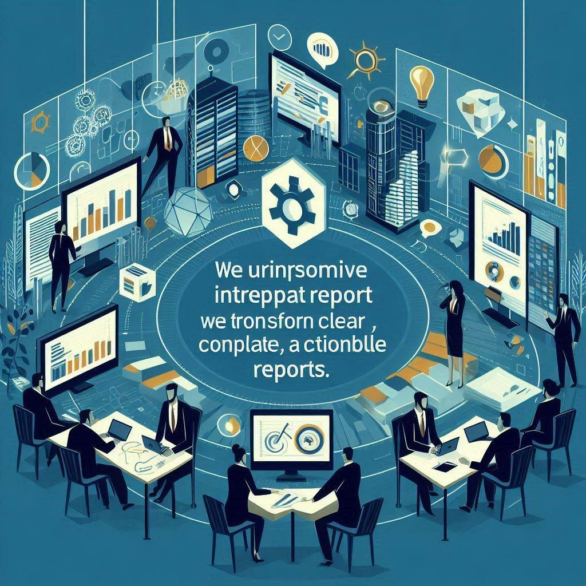

WHY CHOOSE ShallowGeophysics?
Cost-Effective Solutions
We provide high-quality geophysical data processing services that are budget-friendly.
CLIENT-CENTRIC APPROACH
We are dedicated to delivering solutions that align with your project goals and budget.
EXPERTISE AND EXPERIENCE
Our team of skilled geophysicists brings extensive experience to ensure accurate and reliable results.
ADVANCED TECHNOLOGY
We use state-of-the-art software and equipment to maximize signal clarity and reveal critical information.
QUALITY ASSURANCE
Our rigorous quality assurance processes ensure the highest quality results.
COMPREHENSIVE SERVICES
We offer a wide range of services, covering all aspects of surface and borehole geophysical data processing.
CUSTOMIZED SOLUTIONS
We provide tailored workflows to meet the specific requirements of each project.
CLEAR COMMUNICATION
We prioritize clear and timely communication to keep you informed throughout the project.
INTERPRETATIVE REPORTING
We transform complex data into clear, concise, and actionable reports.
CONSULTANCY SERVICES
We offer expert guidance and support throughout all stages of your geophysical project.